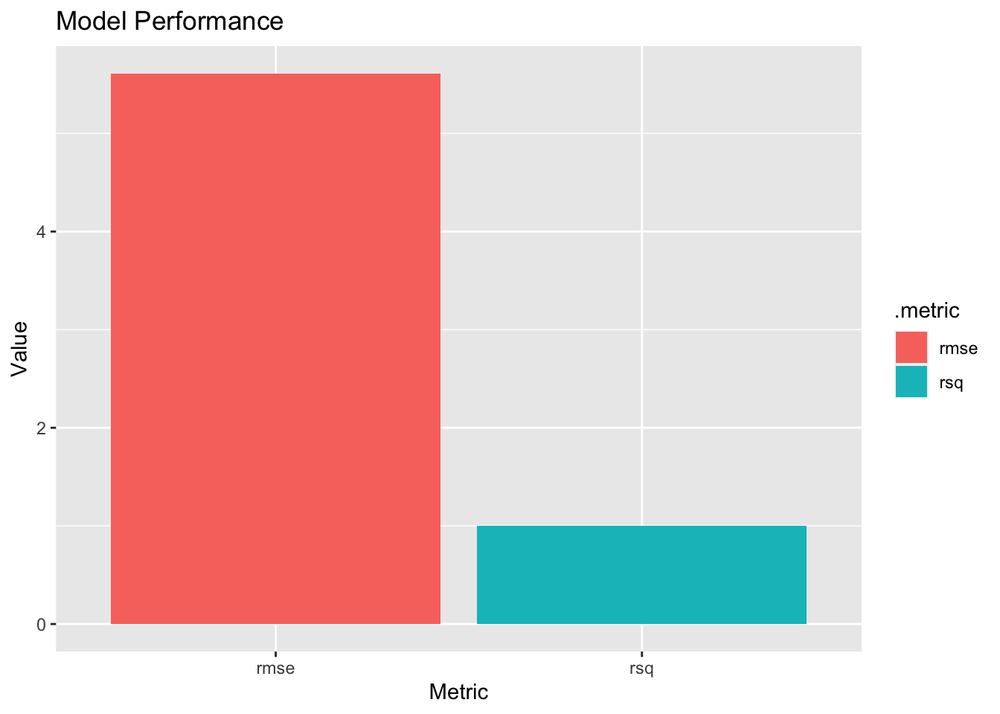

Using data from the California Cooperative Oceanic Fisheries Investigations program (CalCOFI) we will train machine learning models for predicting dissolved inorganic carbon concentrations in water samples.
In this lab, we will apply our machine learning knowledge to train models that can predict dissolved inorganic carbon concentrations in water samples collected by the California Cooperative Oceanic Fisheries Investigations program (CalCOFI). After developing our model, we will test its accuracy using a separate data set and compete against our classmates in a Kaggle competition. Here, you can find more details about the competition.
Dissolved inorganic carbon (DIC) is present in all natural waters. The concentration of DIC varies from less than 20 μM in acidic soft waters to more than 5000 μM in highly alkaline hard waters, but ranges between 100 and 1000 μM in most systems. DIC is usually the most abundant form of C in water. DIC consists of three main constituents: free CO2 (a gas), the bicarbonate ion (HCO3−), and the carbonate ion (CO32 −). Although CO2, like other gases, readily exchanges with the atmosphere, even the surface waters of most inland systems are far from equilibrium and are usually supersaturated with respect to the atmosphere. A number of factors cause this disequilibrium. Reference
Some tasks will be covered in this lab are; explore the data, pre-processing, choose a model algorithm, tune relevant parameters with cross validation, and create my own prediction.
Dataset Description
This data set was downloaded from the CalCOFI data portal. Bottle and cast data was downloaded and merged, then relevant variables were selected. I will use this data (train.csv) to train a model that will predict dissolved inorganic carbon (DIC) content in the water samples.
po4u_m - Micro-moles Phosphate per liter of seawater
si_o3u_m- Micro-moles Silicate per liter of seawater
ta1_x - Total Alkalinity micro-moles per kilogram solution
salinity1 - Salinity
temperature_deg_c Temperature in Celsius (°C)
dic - Dissolved inorganic carbon (Outcome)
Create the folds for the cross validation
V-fold cross-validation (also known as k-fold cross-validation) randomly splits the data into the number of groups you desire making them roughly in equal size. In this case we will split into 10 groups.
Show code
set.seed(1)#Split the datadata_split <-initial_split(train, strata ="dic")data_cv <- train |>vfold_cv(v =10)
Pre-processing
For the pre-processing step we will create a recipe to prepare and normalize our data so we can proceed with the model. In this case we are interested in predicting the outcome variable dic which is the Inorganic Carbon in micro-moles
We will go with the XGBoost model. For short is Extreme Gradient Boosting. This model combines the predictions of multiple decision tree models in a systematic way to improve the accuracy of the final prediction. XGBoost works by iteratively adding decision trees to the model, where each subsequent tree tries to correct the errors of the previous tree. This model is highly customizable and allows for the tuning of many different parameters, making it a popular choice among data scientists and machine learning practitioner thanks to its speed and accuracy.
For this lab purpose we will first create a model tuning the learn_rate. The learn rate controls the step size for each iteration and its crucial to find the optimal learning rate at the beginning to ensure that the model converges efficiently and effectively. Secondly we will create a second model grid, tuning the number of trees, tree_depth, min_n, loss_reduction. Tuning this features such as the number of trees, tree depth, min_n, and loss reduction, we can ensure that our model is robust and able to capture complex relationships within the data. These features help prevent over-fitting and under-fitting by controlling the complexity of the model. Thirdly we will move with the stochastic parameters such as sample_size, mtry, and stop_iter, which they are essential for controlling the randomness in the training process preventing over-fitting by introducing randomness in the model’s selection of features and observations during each iteration. This ensures that the model does not memorize the training data and can generalize well to unseen data.
Learning Rate
Following the XGBoost tuning strategy, first conduct tuning on just the learn_rate parameter:
Show code
first_model <-parsnip::boost_tree( # Set the classification for the dic variabletrees =1000,learn_rate =tune(),) |>set_engine("xgboost") |># Set the model that you want to use.set_mode("regression") # Set the mode depending on your outcome variable
Set up a grid to tune our first model to set the object where the model runs all possible combinations of the specified hyper-parameter values. Then this grid is used to train and evaluate the model using each combination of hyper-parameters to determine which one results in the best performance on the validation set.
Create a workflow for this process: workflow() is a function in the Tidy Models package in R that enables users to define and execute a pipeline of data pre-processing, modeling, and post-processing steps.
Create a tuning process: Here we will tune the first grid with tune_grid. (tune_grid() runs a set of performance metrics (e.g. accuracy or RMSE) for a pre-defined set of tuning parameters that correspond to a model or recipe across one or more resamples of the data.
Show code
doParallel::registerDoParallel() # to build trees in parallelfirst_tuned <-tune_grid(object = first_workflow,resamples = data_cv,grid = first_grid,metrics =metric_set(rmse),control =control_grid(verbose =TRUE))
Show code
#first_tuned %>% tune::show_best(metric = "rmse")first_model_best <- first_tuned %>% tune::select_best(metric ="rmse")kable(first_model_best,digits =round(3),align ="c",caption ="Best Model Result of the First tune") |>kable_styling(bootstrap_options ="striped")
Best Model Result of the First tune
learn_rate
.config
0.021
Preprocessor1_Model03
Tune Second Parameters
The tune() function is used to perform hyper-parameter tuning for machine learning models, where the goal is to find the optimal values for one or more hyper-parameters that maximize the performance of the model on a given data set.
This three parameters control the complexity of the trees being built and the stopping criteria for each tree:
tree_depth: This parameter specifies the maximum depth of each tree in the boosting process. Increasing the tree depth can lead to more complex models that may capture more intricate relationships in the data, but it can also increase the risk of over-fitting.
min_n: This parameter specifies the minimum number of observations required in each terminal node (leaf) of a tree. Setting a higher value for this parameter can prevent the model from fitting to noise or outlines, but it may result in less flexible models.
loss_reduction: This parameter determines the minimum amount of loss reduction required to further split a node in the tree. A higher value for this parameter can result in less complex models and faster convergence, but it may result in a model that is under-fitting the data.
trees: This parameter control the number of trees used in the boosting process. Increasing the number of trees typically improves the performance of the model on the training set, but too many trees can lead to over-fitting.
Set up a tuning grid. This time use grid_max_entropy() to get a representative sampling of the parameter space
Show code
second_grid <- dials::grid_max_entropy(min_n(),tree_depth(),loss_reduction(),trees(), size =100) #GRID specs from the book
Use the tune_grid to feed all alternatives and create the tuning process.
Show code
doParallel::registerDoParallel() # this function helps to build trees in parallelseconed_tuned <-tune_grid(object = second_workflow,resamples = data_cv,grid = second_grid,metrics =metric_set(rmse),control =control_grid(verbose =TRUE))
Show the performance of the best models
Show code
#seconed_tuned %>% tune::show_best(metric = "rmse")second_model_best <- seconed_tuned %>% tune::select_best(metric ="rmse")kable(second_model_best,digits =round(3),align ="c",caption ="Best Model for the second tune") |>kable_styling(bootstrap_options ="striped")
Best Model for the second tune
trees
min_n
tree_depth
loss_reduction
.config
868
3
7
5.601
Preprocessor1_Model006
In this case the show_best() displays the optimal hyperparameters and the corresponding performance metric(s) from the tuning process.
Tune Stochastic Parameters
Now, for our third model we will randomly sample observations and predictors (features) at each iteration, which will help us to reduce overfitting and improve the generalization performance of the model. This process is called Stochastic Gradient Boosting (SGB) and we will tune tune() the hyperparameters of sample_size, mtry and stop_iter:
sample_size: This argument specifies the fraction (or absolute number) of observations to be sampled at each iteration. The default value is 1, which corresponds to sampling all observations. Setting sample_size to a value less than 1 results in stochastic gradient boosting, where each iteration uses a randomly selected subset of the data.
mtry: This argument specifies the number of randomly selected predictors (features) to be used at each split in the tree. The default value is NULL, which corresponds to using all predictors. Setting mtry to a value less than the total number of predictors results in stochastic feature selection, where each split uses a randomly selected subset of the predictors.
stop_iter: This argument in boost_tree() specifies the stopping criterion for the boosting process. This hyperparameter determines when the boosting process should be terminated based on a certain criterion, such as the improvement in the loss function or the number of consecutive iterations with no improvement.
Use the tune_grid to feed all alternatives and create the tuning process
Show code
doParallel::registerDoParallel() # to build trees in parallelthird_tuned <-tune_grid(object = third_workflow,resamples = data_cv,grid = third_grid ,metrics =metric_set(rmse),control =control_grid(verbose =TRUE))
Show the performance of the best models
Show code
#third_tuned %>% tune::show_best(metric = "rmse")third_model_best <- third_tuned %>% tune::select_best(metric ="rmse")kable(third_model_best,digits =round(3),align ="c",caption ="Best Model for the Third Tune") |>kable_styling(bootstrap_options ="striped")
Best Model for the Third Tune
mtry
sample_size
stop_iter
.config
6
0.679
11
Preprocessor1_Model093
As we can see in the results above for the Stochastic Parameteres, which are this randomized selections to reduce overfitting, our new optimal parameter are:
Boosted Tree Model Specification (regression)
Main Arguments:
mtry = 6
trees = second_model_best$trees
min_n = second_model_best$min_n
tree_depth = second_model_best$tree_depth
learn_rate = first_model_best$learn_rate
loss_reduction = second_model_best$loss_reduction
sample_size = 0.678898499789648
stop_iter = 11
Computational engine: xgboost
Finalize workflow and make final prediction
Assemble your final workflow will all of your optimized parameters and do a final fit.
How well did your model perform? What types of errors did it make?
RMSE: On average, the predicted DIC values from your model are off by about 5.610567 units of DIC. This means that if the actual DIC value is 100, your model might predict a value between 105.610567and 94.389433, with an average error of 5.610567 units. It’s important to note that this is an average error across all predictions, and there may be individual predictions that are much more or less accurate than this.
R²: Your model explains 99.7510634% of the variance in DIC. This means that the model fits the data very well and can be used to make accurate predictions. A high R² value indicates that there is a strong linear relationship between the predictors and the outcome, and that the model is able to capture this relationship well.
Now lets add the predicted data to our testing data:
Rows: 485 Columns: 17
── Column specification ────────────────────────────────────────────────────────
Delimiter: ","
dbl (17): id, Lat_Dec, Lon_Dec, NO2uM, NO3uM, NH3uM, R_TEMP, R_Depth, R_Sal,...
ℹ Use `spec()` to retrieve the full column specification for this data.
ℹ Specify the column types or set `show_col_types = FALSE` to quiet this message.
Show code
result <- final_workflow |>fit(data = train) |>predict(new_data = test)predict_test <-cbind(test, result) |>cbind(test_id) |>rename(DIC = .pred) |>select(c(id, DIC)) #This is the line where you can add your final results#write_csv(predict_test, "final_results.csv")
Create a graph and prints the result of RSME error (The lower the better), and the rsq value. This can be seen in the table above.
Show code
ggplot(final_metrics, aes(x = .metric, y = .estimate, fill = .metric)) +geom_bar(stat ="identity", position ="dodge") +labs(x ="Metric", y ="Value", title ="Model Performance")

Citation
BibTeX citation:
@online{patrón2023,
author = {Patrón, Javier},
title = {Inorganic {Carbon} in {Machine} {Leaning}},
date = {2023-04-02},
url = {https://github.com/javipatron},
langid = {en}
}